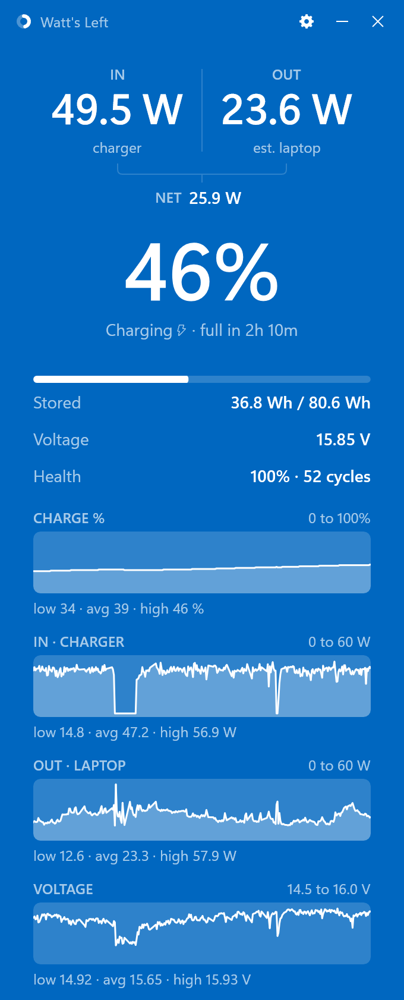

Watt's Left
See how fast your laptop is charging or draining, live, in watts.

What it shows
- IN watts flowing from the charger into the battery. Higher is faster charging.
- OUT watts the laptop is drawing from the battery. Lower lasts longer.
- Time left stored energy divided by your average draw over the last five minutes, refreshed every thirty seconds.
- Stored energy in watt-hours, voltage, health against design capacity, and cycle count.
- Thirty-minute graphs of charge, watts in, watts out and voltage, kept across restarts.
- The live percent in your tray icon. Hover any number for a one-sentence explanation.
Overview
Watt's Left is a free, open-source Windows app that shows, live, how many watts your charger is putting into your laptop battery.